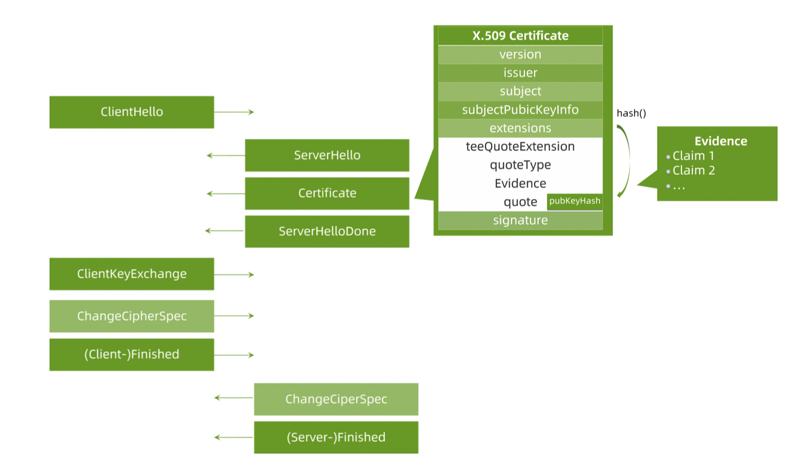
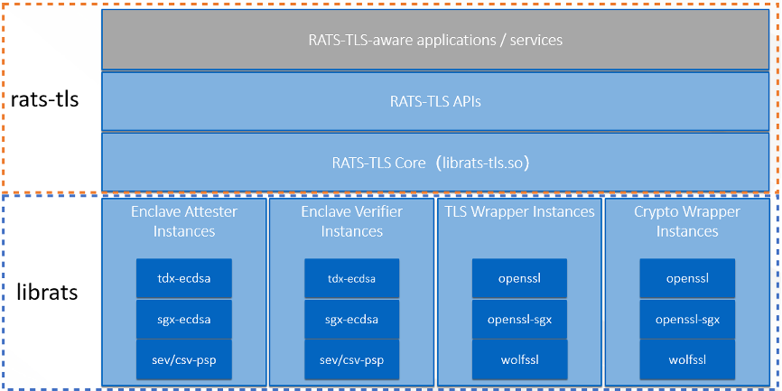

RATS-TLS: 跨机密计算平台的双向传输层安全协议
项目位置链接
https://github.com/inclavare-containers/rats-tls
项目归属SIG
云原生机密计算SIG
技术自身介绍
背景
机密计算指使用基于硬件的可信执行环境（Trusted Execution Environment，TEE）对使用中的数据提供保护。 通过使用机密计算，我们现在能够针对“使用中”的数据提供保护。RATS-TLS是将对HW-TEE的远程证明和TLS通信协议绑定的一项创新性的项目， 有助于租户通过RATS-TLS验证正在运行的程序是在可信的环境中， 并和程序之间建立安全通道传输加密的数据。
问题&挑战
硬件可信执行环境中运行的应用都是可信的，包括TLS库，因此似乎不用对HW-TEE内的TLS库进行特别的考虑，但与HW-TEE通信的对端必须要验证工作负载是否运行在真实的HW-TEE中。常规的远程证明工程化实践只是对远程证明底层原语进行了封装，实际产出就是让通信双方能够安全可信地协商出共享secret，并将如何基于共享secret创建安全通信信道的工作留给了应用开发者。
远程证明和建立安全信道的逻辑必须要深度结合，否则易受中间人攻击的影响。即使不将RA与TLS这么复杂的协议结合，至少也要能实现仅通过RA协议来协商出作为安全信道基础的共享密钥这一基本功能。但是仅做到共享秘密信息的程度是无法完全实现安全信道的。虽然基于共享秘密的方式能够实现安全信道，但是基于RA协议实现的安全信道的通信效率太低。解决方法是将RA与能够提供安全信道的标准协议相结合，比如TLS协议。
Thomas Knauth 提出将Intel SGX远程证明和TLS结合的方案，但是该方案面临着以下挑战：
如何灵活地支持不同的TLS库？
如何适配不同的HW-TEE环境？
如何让两个不同类型的HW-TEE互相验证对方的Evidence？
解决方案
为了解决以上挑战，我们提出了Rats-TLS，一种支持异构硬件可执行环境的双向传输层安全性协议。如下图所示，Rats-TLS在TLS的基础上增加了将TLS证书中的公钥与HW-TEE attestation quote绑定的能力，基于HW-TEE硬件为信任根，即可证明了对方是在可信平台上，又可以高效的传输数据。

Rats-TLS的架构如下图所示，Rats TLS 提供了API给上层的应用和服务使用，API能够实现可信安全信道的建立和数据的传输。Rats TLS API的实现依赖于核心层与四类实例的实现。

为了提供更好的安全性，核心层与四类实例插件都运行在HW TEE环境中。由于Rats-TLS架构需要支持和灵活选择多种可能性（例如：TLS库，加密库，Enclave形态等），因此根据功能逻辑区分出不同的实例插件是必不可少的。下面简单介绍一下核心层和实例插件的作用。
- 核心层: 负责整体的控制作用，控制数据流的流向。
- TLS Wrapper实例: 负责完成真正的TLS session管理和网络传输。
- Attester 实例: 从本地平台运行环境中收集证明材料，通常要有Enclave配合生成quote数据。
- Verifier 实例: 负责验证收到的各种格式的quote数据，可能收到来自另一个不同的机密计算硬件平台发来的quote。也可能存在verifier与attester必须是相同平台的情况，比如verifier使用SGX ECDSA QVE的情况：强制要求当前运行环境必须支持SGX ECDSA，否则无法启动QVE来验证SGX ECDSA quote。
- Crypto实例: 负责配合其他实例完成与密码学算法有关的操作。例如，它可以生成自签名证书并将quote封装到证书扩展中。
Rats-TLS具有以下优势：
- 能够支持不同的HW-TEE类型。
- 能够支持不同的TLS库。
- 能够支持不同的密码学算法库。
- 能够支持不同类型HW-TEE间的双向TLS认证。